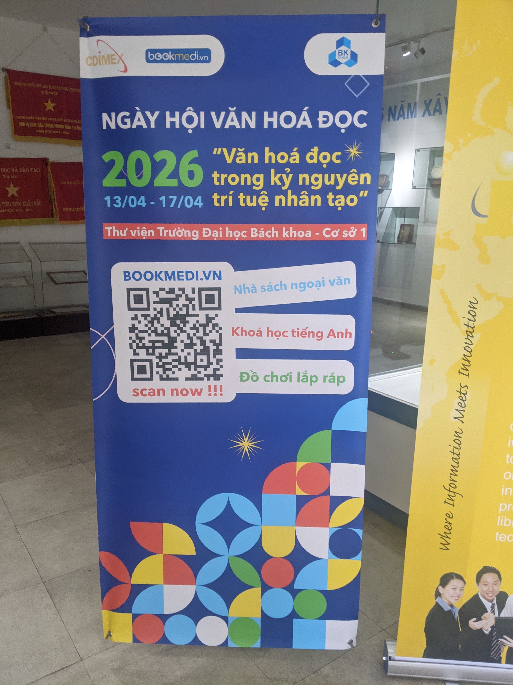
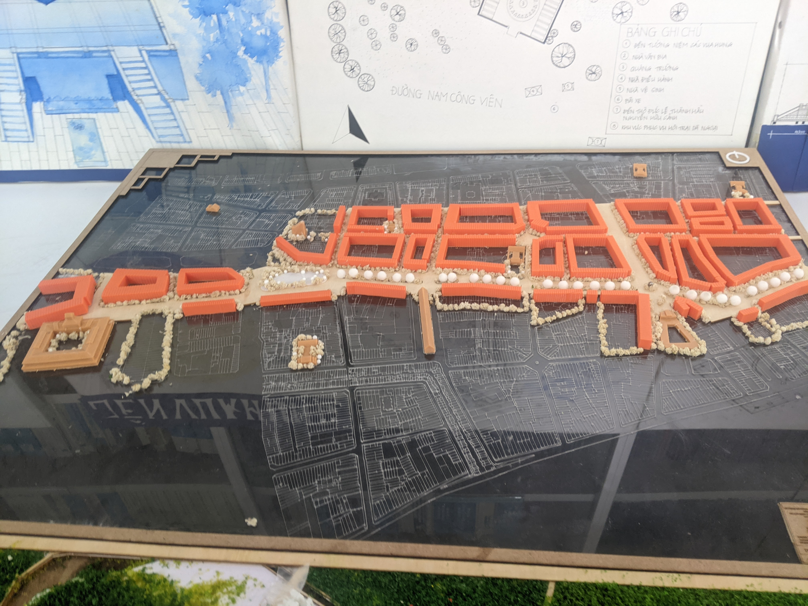
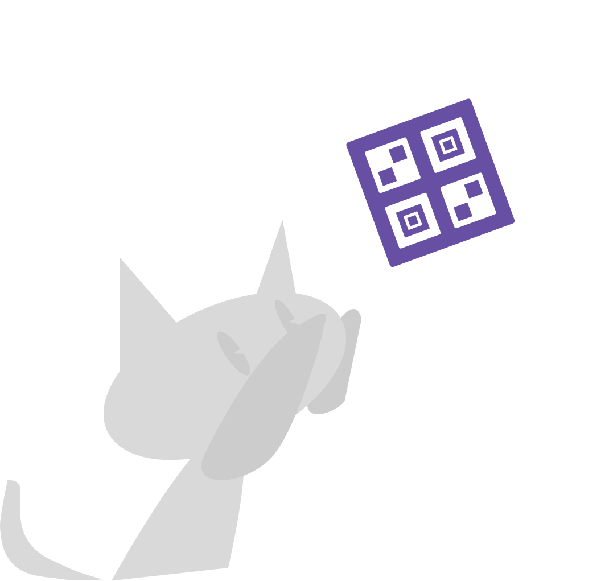
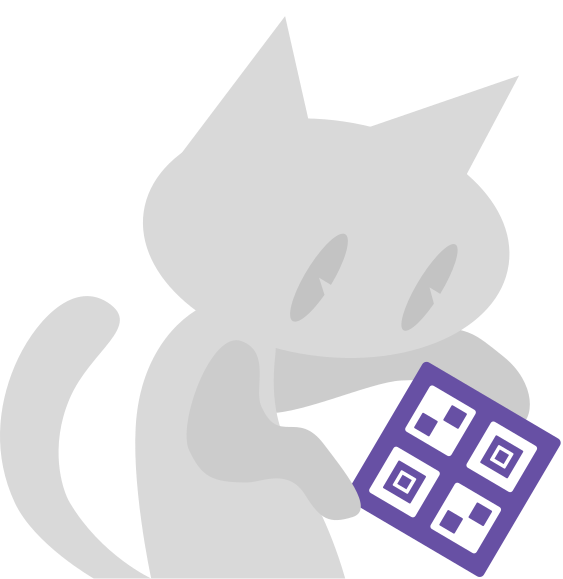

github.com/ttb-hcmut
Content
Introduction
Personal problem statement
Our group of developers went to two comic book conventions.
It is a blend between traditional conventional and artistic museum-ing.
Unlike a museum, a convention is a one-time / annual event.
HCMUT Reading Culture Day 2026


HCMUT Reading Culture Day 2026

Formal problem statement
What is a museum companion?
Related systems
- Smartify
- Google Arts & Culture (AnC)
Honorable mentions:
- Google Maps
image of smartify
A quote from smartify
Interesting features of smartify
image of AnC
A quote from AnC
Interesting features of AnC
What’s missing
- What do all museum apps have in common?
- Can we extract them into reusable developer components?
- Reduce development cost
Our contributions

Our contributions
- TTB Museum, a framework for making digital museum companioning
- Example presets for TTB Museum
…
Insert image here
Our contributions
…
- Figma prototype
- (Future) Example museum application in action
Insert image here
Glossary
Users and stakeholders
- The TTB Museum framework: for developers and ITs
- Figma prototype, example museum application: for products manager looking to adopt this framework
Scope
- Museums in HCM
- Esp. if we prioritize: local-first, portable
- Mobile application
- Android
A taste of TTB Museum
Design philosophy
For creator
- Little-to-no choice
- Modular. Each museum is very egotistic, let’s embrace that! <33
For user
- Standardized, to be like most museum apps
- Native application
- Offline
For tour guide
- Control
The standard museum user flow
Login → Guided tour → Adventure tour → End
Diagram
| - Scan QR |
|---|
Design system
- Hierarchy
- Material Design (source: )
- First-party’s design system
Templates
- We designed three templates
- Reason:
Template 1
Art museum
Based on: bảo tàng mỹ thuật thành phố hồ chí minh
Color: Typography: Source:
Template 2
Color: Typography: Source:
Template 3
Color: Typography: Source:
Component zoo
Looks
Interactive tour
Future work
- Bookmark system
- Quiz system
- Achievement system
That’s it!
This presentation was written in the Quarkdown typesetting language, decorated by TTB-HCMUT’s bachkhoa.qd template.
The TTB Museum logo has the shape of a
sponge fractal <33
